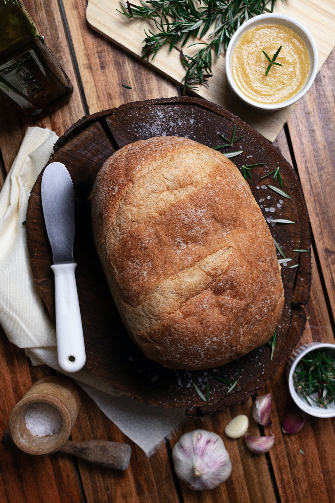

Pão amanteigado

Igredientes
- 1 ovo
- 1 xícara (240ml) de leite morno
- 4 x;icaras de farinha de trigo
- 4 colheres (sopa) de açúcar
- 1/2 colher (chá) de sal
- 4 colheres manteiga ou margarina
- 1 fermento biologico seco (10g)
Modo de preparo
Misture todos os ingredientes e
sove por aproximadamente 15 minutos.
Deixe descansar até dobrar de volume
em local abafado.
Modele como preferir e deixe dobrar
de volume novamente. Por último é só
assar em temperatura média até dourar
em cima.
Sequilhos
Igredientes
- 500gr de maizena
- 4 colheres de margarina
- 1 gema
- 1 cx de leite condensado
- 1 pacote coco ralado
Modo de preparo
Misture o leite condensado a gema,
o coco e a margarina, depois coloca
a maizena aos poucos até formar uma
massa, enrole fazendo uma minhoca e
vai cortando com a faca, depois asse
por 15 minutos np forne já aquecido.
Pão simples
Igredientes
- 1 xícara de leite morno
- 2 ovos
- 1 colher de açucar
- 1 pitada de sal
- 1/2 xícara de óleo
Modo de preparo
Bate tudo no liquidificar, até criar
uma massa homogenica.
unte a forma com farinha de trigo
leve ao forno e observe até dourar o pão.
Pão caseiro
Igredientes
- 1 colher de (sopa) sal
- 2 colheres (sopa) de açucar
- 2 colheres de (sopa) de manteiga
- 20 gramas de fermento biologico
- 1 ovo
- 500 ml de água morna
Modo de preparo
Dissolva o fermento no açucar, adicione
metade da água morna, mexa bem e
coloque sal, o ovo e a manteiga.
Despeje a farinha peneirada e o
resto da água aos poucos, amasse a
massa com as mãos até chegar ao
ponto certo que é quando ela se
desgruda das mãos. Trabalhe muito
bem a massa e deixe ela descansar
até dobrar de tamanho.
moldele os pães e coloque no forno a
180 graus até dourar. e bom apetite.